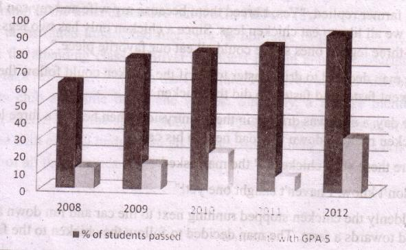

Sample Question
SSC Examination
English Paper One
Full Marks: 100
Time: 3 hours
[Answer all the questions. Figures in the margin indicate full marks]
Read the passage. Then answer the questions below.
The question of whether cell phones should be allowed in schools has been a matter of debate in recent years. Schools in many developed countries are now finding it rather difficult to enforce a ban on using cell phones. A recent study has found that 65, percent of teens at schools that have a ban on cell phones bring their phones to school every day anyway. What is more alarming is 43 percent of all teens who take their phones to school say they text in class at least once a day.
Monica feels sad because all her friends have a cell phone but her mother does not want to buy her one. Her mother does not want Monica to play video games either. She is also scared about the internet. Monica's mother says, "If Monica has a cell phone, how do we know who she is talking to? Video games are bad for her. The internet is dangerous and uncontrolled. It's like having a gun in the house. We should just ban her from using the computer and I'm not buying her a cell phone until she is eighteen. This is the only way that we can be sure that Monica is safe."
Monica's father disagrees with Monica's mother. Although he agrees that there are some dangers with the internet, he likes it and finds it to be very useful. He says, "We just can't stop Monica from using the internet as this would put her at a disadvantage." He likes video games too. He says, `"I think, when played in moderation, video games are fun. Obviously, it is not good to play them without restraint or self-control." Monica's father feels that Monica needs a cell phone and they can't take these things away. (295 words)
1. Choose the correct answer from the alternatives. 1 x 7 = 7
A. Which of the following has the closest meaning of the word `enforce' used in line 2?
a) support
b) impose
c) strengthen
d) highlight
182B. What does the expression `they text in class' in line 5 mean?
a) They read a text in class given by the teacher.
b) They send short messages in class using cell phones.
c) They take at least one of their textbooks in class.
d) They copy a passage from their textbook in class.
C. Which of the following best describes the similarity between Monica's mother and Monica's father?
a) Mother and father both like technology.
b) Mother and father both dislike video games.
c) Mother and father both think the internet is dangerous.
d) Mother and father both care about Monica's future.
D. Which of the following word describes Monica's mother best?
a) careful
b) ridiculous
c) cruel '
d) rude
E. Which of the following statement(s) is/are true about Monica's father?
a) He likes the internet.
b) He thinks the internet will be dangerous in future.
c) He thinks the internet is only useful to the adults.
d) He does not like Monica to use the internet.
F. In paragraph 3 Monica's father says, "We just can't stop Monica from using the internet as this would put her at a disadvantage." What does Monica's father mean by this?
a) The internet is very useful for having friends in future.
b) One can use the internet to cheat in the exams
c) Using the internet might be considered an important skill in- future.
d) Monica must use computers for preparing her home tasks.
183G. What is the main purpose of the author of this passage?
a) To make people aware of the dangers of technology.
b) To show the advantages and disadvantages of using technology . ,
c) To highlight the importance of technology for school children. .
d) To criticize the schools those enforce a ban on cell phones.
2. Answer the following questions, 2 x 5 =10
a) From your reading of paragraph 1 of the passage, give an example of inappropriate use of cell phones by school students.
b) "It's like having a gun in the house." Who says this? Why does she/he say this? Explain in ? 3 sentences.
c) What does Monica's father think about video games?
d) Describe the differences between Monic4's mother and Monica's father in 2 /3 sentences.
e) Do you support the attitude that Monica's mother has toward technology' Why/Why not? Explain in 2/3 sentences.
3. Write a summary of the passage in no more than 90 to 100 words. 10
4. Read the passage on the membership of a sports club. Complete the table
below with information from the passage 1 x 5 = 5
Young Bengal Sports Club offers three different membership schemes. The first one is called Gold and it allows you to use all the facilities at any time of the day or week. With this membership you can join in as many classes as you like for free. It will cost Tk.3000 for Joining and Tk.500 as annual subscription fee. Then there is the Silver one. It's the same as Gold except you have to pay a small fee of Tk.10 per lesson you attend. However, you can use the sports club only at certain times, between 10-00 am and 4-30 pm. So if you wish to use the swimming pool at 8-00 in the morning or 600 in the evening, you can't have access to the club. The joining fee for a Silver membership is slightly less than Tk.3000- it's Tk.2500/- but the annual fee is only Tk.200. Finally, there is the Bronze membership which probably suits people who find the Gold or Silver too expensive. Although some of the facilities are restricted with this type of membership, the fees are quite affordable. Access for the Silver member is open from 10-30 am to 3-30 pm weekdays only. The joining fee is Tk.800 and you pay a Tk. 50 annual fee. You have to pay Tk. 15 per lesson for any lesson you may join.
184| Type of membership |
Joining fees |
Times/days | Annual Subscription fee |
|
Gold |
Tk. 3000 |
Anytime |
(1) Tk. [dash] |
|
Silver | (2) Tk.[dash] |
(3) from [dash] to |
Tk. 200 |
|
Bronze |
Tk. -800 | from 10-30 to 3-30 (4) [dash] only |
(5) Tk. [dash] |
5. From your reading of the above passage fill in the blanks with suitable words. Use one word only in each blank. 1 x5 = 5
There are three kinds of memberships offered by the Young Bengal Sports Club. The
Gold membership is the most expensive but it offers all the ( a ) [dash] to the
members for unrestricted time. Gold members do not have to (b) [dash] any extra
amount for attending classes. Silver members pay an annual subscription fee which is 300
taka (c) [dash] than the Gold rate. However, a silver member can't use the sports club
any time he or she wishes. Similarly, a Bronze member has limited (d) [dash] to the
sports club, from 10-30 am to 3-30 pm on weekdays only. Someone with a small budget
can go for the Bronze membership as it is the (e) [dash] of all the schemes.
1856. Match the parts of sentences given in column ‘A’ and column ‘B’ to write five complete sentences. There are more parts of sentences in column ‘B’ than required.
1x5=5
| a) Thakurmar Jhuliis one of the prime favorites b) Rabindranath Tagore himself c) Even today many parents consider d) Some children of this age do not like e) Many of the stories of Thakurmar Jhuli are | I. gained legendary status. II. this book a classic choice for their children. III. now also available in the form of videos, audio-CDs, and e-books. IV. with children since its first publication in 1907. V. reading books in printed version. VI both from West Bengal as well as Bangladesh. VII. wrote the introduction to Thakurmar Jhuli. |
7. Put the following parts of the story in correct order to rewrite the whole story. 1x8=8
a) When he arrived at the farm he saw a farmer standing outside surrounded by many three legged chickens.
b) The farmer replied. "Yes. I breed them because my wife and my son live here and we all like to eat chicken legs. Since a chicken only has two legs, I breed this three legged ones so we could all eat our favorite piece."
c) The man decided to drive faster to see if the chicken could follow the speed. As he went faster and faster, so did the chicken.
d) One day; a man was driving in the countryside when he saw a three legged chicken running down the road next to his car.
e) "Are these your chickens?" the man asked.
f) "I don't know. I haven't caught one yet!"
g) Suddenly the chicken stopped running next to the car and ran down a country road towards a farm. The man decided to follow the chicken to the farm.
h) "That's amazing!" said the driver "How do they taste?"
1868. Answer the following questions to write a paragraph on Your Most Favourite Song.
a) What is your favourite song?
b) Who is the writer of the song lyrics? .
c) What kind of song is it?
d) What is said in the song?
e) Why do you like this song?
9. Read the beginning of a story. Write ten new sentences to complete the story.
1x 10= 10
Once upon a time there were three tortoises- a father, a mother and a baby. One day, they decided to go for a picnic. They got fish, breads and chocolates, and ice-creams, and fruits, and orange juice. They put everything in their baskets and after three months they were ready.
They walked, and walked and walked. After three months they sat down near a forest and had a rest. While taking rest at night, they heard a strange voice coming from the forest[dash]
10. The graph below shows the results of SSC exam of ABC Secondary School from 2008 to 2012. Describe the chart in 150 words. You should highlight and summarize the information given in the chart.
10

11. Suppose, you have a friend in Nepal named Mahesh/ Renuka. You have just visited Nepal and had a great time with Mahesh/Renuka at his/her place in Kathmandu. Write an email to Mahesh /Renuka thanking him/her for the hospitality he/she offered you in Kathmandu.
10
12. Alisha is a 17 year old girl. She has been suffering from fever for three days She has a temperature and a cough and she feels pains all over her body. She doesn't have an appetite and can't take anything except fruit juice. Alisha goes to the doctor. The doctor asks Alisha questions to know about her illness. Hearing everything, the doctor doesn't prescribe any medicine but suggests Alisha to take rest for one week and have enough fluid. Write a short dialogue that Alisha might have with the doctor. 10
Suggested answers
1. Answers (Multiple Choice Questions)
A. (b)
The word enforce (verb ) means ‘to make people obey a rule or law'. Sentence 2 is about the difficulty of making schools students obey the ban on using cell phone at schools.
The word impose means ‘to officially order that something should be restricted, banned or forbidden'. The word `impose' has the closet meaning of ‘enforce ‘in the sentence. Therefore (b) is correct.
B (b)
text (verb) means ‘to send someone a text message by phone’. Therefore, b is the correct answer. The other options (a, c, d) do not make sense in the given sentence and are incorrect.
C. (d)
In paragraph 2. Monica's say that the internet, cell phones, and video games are dangerous. At the end of the paragraph she says. "This is the only way we can be sure that Monica is safe." This lets us know that Monica's mom cares about Marcia's wellbeing. In paragraph 3, we learn about why Monica's dad thinks technology is for Monica. Moreover, he does not want to take technology away from Monica, as this will put her at a disadvantage." This lets us know that Monica's dad also cares about Monica's wellbeing therefore (d) is correct.
188D. (a)
In paragraph 2, we learn about how Monica's mom thinks the internet is "dangerous and uncontrolled." She is very concerned about her daughter's wellbeing, and does not want her to take any risks. Using this information we can understand that Monica's mom can best be described as careful (a). As caring about one's child is not ridiculous, choice (b) is incorrect. (c) is incorrect because it is wrong to think that Monica's mom is cruel simply because she has an extreme view of technology. Choice (d) is incorrect because Monica's mom is never rude, or impolite.
E (a)
The second sentence of Paragraph 3 helps us to know about Monica's father's attitude to the internet. It says. "Although he agrees that there are some dangers with the internet, he likes it and finds it to be Very Useful” This let us know that Monica's Father likes the internet. Therefore, the correct answer is (a). It is not said anywhere in the passage that the internet will be dangerous in future. Monica's father thinks that the internet can be useful for young girls like Monica. So he does not think that internet is useful only to the adults.
F.(c)
disadvantage (noun): an unfavorable or poor condition.
In paragraph 2, we learn about why Moncia's dad thinks technology is good for Monica. According to him, technology is "very useful." Moreover, he does not want to take technology away from Monica, as this will "put her at a disadvantage." That means if Monica does not learn to use the internet, and the internet becomes important in the future, she will be at a loss. Therefore, choice (c) is correct. The passage does not provide information to support choices (a), (b), and (d). Therefore, they are incorrect.
Forma-25 ,English For Today-9-10
189G. (b)
As we read the whole of the passage, it tells us about some advantages as well as advantages of using technology by the children. Therefore, (b) is the correct answer. The passage does not only focus on the dangers of technology (a) or it does not only highlight the usefulness of technology for children (c). In the passage there is no evidence of criticizing schools for putting a ban on cell phones. That is options (a), (c) and (d) all are incorrect.
2. Answers.
a) It is said in paragraph 1 that 43 percent of the students who bring their cell phones to schools without permission send text messages at least once a day. This is an alarming example of inappropriate use of cell phones by students at schools.
b) This is said by Monica's mother. She says this to highlight the potential dangers of the internet. Having a gun in the house is always risky and one may not always use a gun in a controlled way. According to Monica's mother, having the internet in the house can be very harmful for Monica as it is difficult to control.
c) Monica's father thinks that video games are enjoyable when played for a reasonable amount of time. He believes that one must not play video games for unlimited hours and without self-control.
d) Cell phones, video games and the Internet are all examples of technology. Monica's mother doesn't want Monica using these devices of technologies because she is worried that they are dangerous or bad for Monica. On the other hand, Monica's father thinks that Monica should use the technology because it is useful and fun.
e) I don't support Monica's mother's concern about using technologies such as the internet, cell phones and video games. Technology itself is not dangerous or bad. We are living in the age of technology and it can be very useful too. However, I think the young children should be taught about using technology responsibly before they are allowed to use it.
1903. Answer (Summary)
The issue of using cell phones at school is a matter of recent debate. Many schools are struggling to prevent their students from using cell phones. Guardians also have different views on allowing children to use technological devices such as cell phones, video games and the internet. Monica's mother is a guardian with a conservative attitude to technology. She does not want her daughter to use technology as it might cause harm to her. On the other hand, Monica's father has a much liberal attitude to technology. He does not want to deprive Monica of the blessings of technology. (100 words)
4. Answers (Information transfer)
1) 500/five hundred/5 hundred
2) 2500/ two thousand five hundred
3) 10-00, 4-30/l0am, 4-30pm (both required for correct answer)
4) weekdays
5) 50/fifty
English For Today 195
5. Answers
1) facilities/amenities/services
2) pay/give/deposit
3) less/lower/cheaper
4) access/entry/admission
5) cheapest
6. Answer (Matching)
Thakurmar Jhuli is one of the prime favorites with children since its first publication in 1907. Rabindranath Tagore himself wrote the introduction of Thakurmar Jhuli. Even today many parents consider this book a classic choice for their children. Some children of this age do not like reading books in printed version. Many of the stories of Thakurmar Jhuli are now also available in the form of videos, audio-CDs, and e-books.
7. Answer (re-arranging)
The parts of stories can appear in the following order: d), c), g), a), e), b), h) and, f)
1918. Answer (paragraph)
My most favourite song
There are many songs that appeal to my mind. In fact, the list of my favourite songs is rather long. But if I am asked to choose my most favourite song, I have to mention just one that comes to my mind instantly. The song is known as Dhana dhanyo pushpo bhora." This song is written and composed by the great poet and lyricist Dwijendralal Roy, popularly known as D.L. Roy. This is a song of patriotism which reflects the glory of our motherland. This is one of the most beautiful patriotic songs I have ever heard. It is said in the song that our mother land is the queen of all the lands on this earth and it is made of dreams and enfolded with memories. The song is a tribute to the matchless natural richness of our motherland. Throughout the song we have vivid descriptions of the wonderful natural blessings, love and affection that we enjoy in this land. The song ends with the yarning that this land that nurtured us from our birth will be the place of our final breath on earth. A sense of pride fills me when I listen to this composition. I salute my motherland as I listen to this song. It depicts our love and respect for our own country and nation. There is one more reason why this song is so close to my heart. I grew up listening to this song. Every time I listen to this song, I go back to my mother's lap and hear her melodious voice singing "Sokol desher rani she je amar jonmobhmi". (268 words)
10. Answer (Describing graph)
The graph shows the results of SSC examinations of ABC Secondary School from 2008 to 2012. In general, the graph shows a gradual improvement of the SSC candidate's performance within this time. It is seen from the graph that the pass rate increased from 60% in 2008 to 92 % in 2012.
The graph also shows an increase of candidates who passed with a GPA 5 except in 2011. In fact, the school had the lowest rate of GPA 5 holders in 2011, which was only 9%. The performances of the SSC candidates were almost similar in 2009 and 2010, with slightly better results in 2010. The school recorded the best results in 2012 when the pass rate went beyond the 90% mark. Moreover, a record of 32% candidates passed with a GPA 5 in this year.
Overall, the graph illustrates that the SSC results of ABC Secondary School is improving steadily. (152 words)
19211: Answer (Letter writing)
| Dhaka, 23 May, 2013 Dear Mohesh/Renuka, Thanks so much for your kind letter and the lovely photos of my holiday in Kathmandu. Sorry for the delay in acknowledging your mail. In fact, I was away from my hometown to see some relatives in my village. I've just returned to Dhaka today. Looking at the photos brings back so many happy memories of the times we spent together and the wonderful hospitality you extended to me. During my short stay in Kathmandu you surrounded me with warm friends, good food, amazing sights and great shopping. I can't thank you enough. Why don't you plan a holiday and come to Dhaka to stay with me this winter? The weather in Dhaka is great at that time and we will have two weeks of winter vacation. I would be thrilled if you could make it. Thank you again for the beautiful holiday and the photos which are already posted on my Facebook page. Waiting to hear from you. Warm wishes. |
[NB: In this letter UK style of formatting is followed. Students are free to follow any style/format to write their letters. However, a mixture of more than one style in the same letter is not desirable.]
12. Answer (Writing Dialogue)
Doctor : Hello, What seems to be your problem?
Alisha : I have a temperature and a very bad cough.
Doctor : How long has this cough been bothering you?
Alisha : I think, for last 3 days...
Doctor : Right. Do you have any other problems at this moment?
Alisha : I have terrible ache all over my body.
Doctor : Do you have any history of back pain?
Alisha : No, this is the first time.
Doctor : Ummm.-... So, what are you having in your meals now?
Alisha : In fact, I can't eat anything now. I don't have any appetite. I had some fresh juice and one
or two biscuits this morning, and a cup of lemon tea.... that's it.
Doctor : Listen, you have had a bad flu. In fact, many people are having flu these days.
Alisha : Are you going to give me any medicine?
Doctor : No. I don't think you need medicines at this stage. All you need is complete rest. And try
drinking enough fluids .... like orange juice. You can also drink hot coffee or soup.
Alisha : But how long do I need to be at home? My school exam is due next month.
Doctor : Don't worry. You can join your classes, hopefully from next week.
Alisha : Thank you doctor for being so nice with me.
Doctor : You are welcome. (233 words)
The End